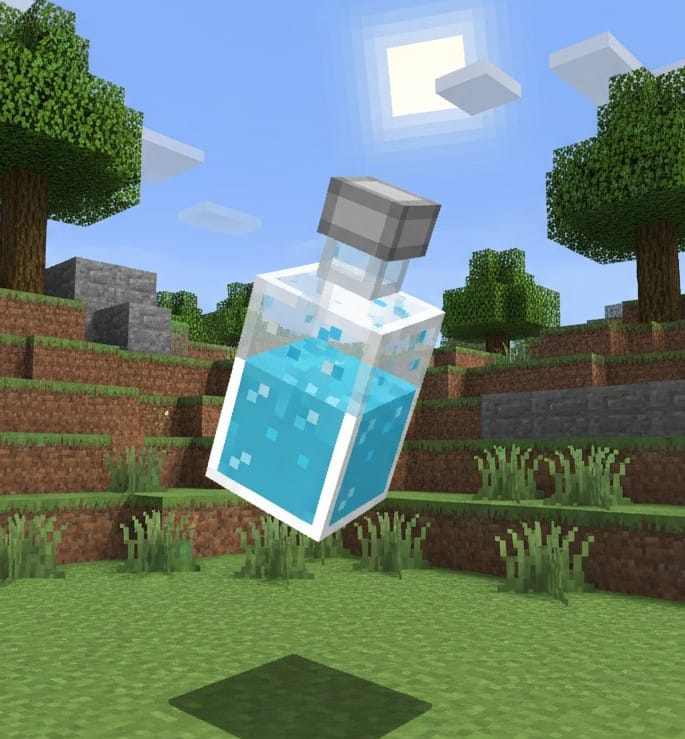
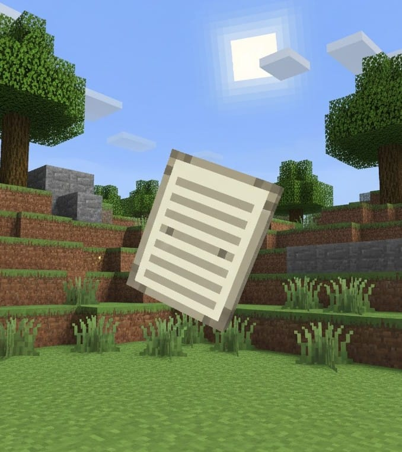
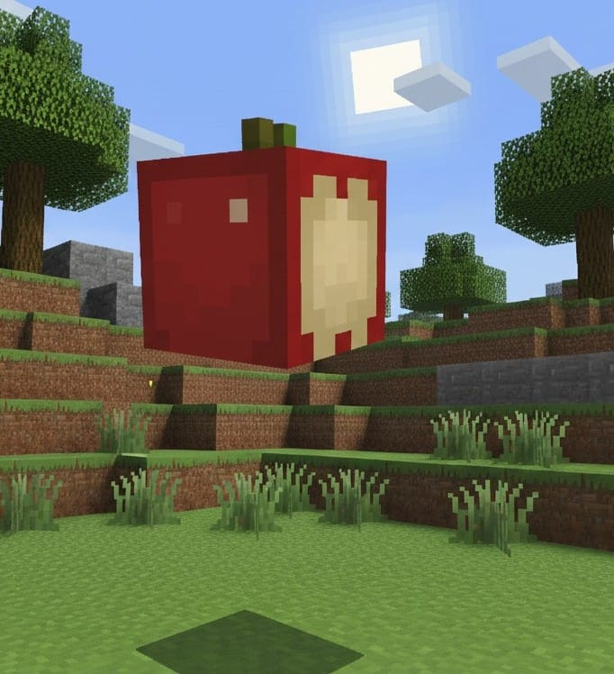
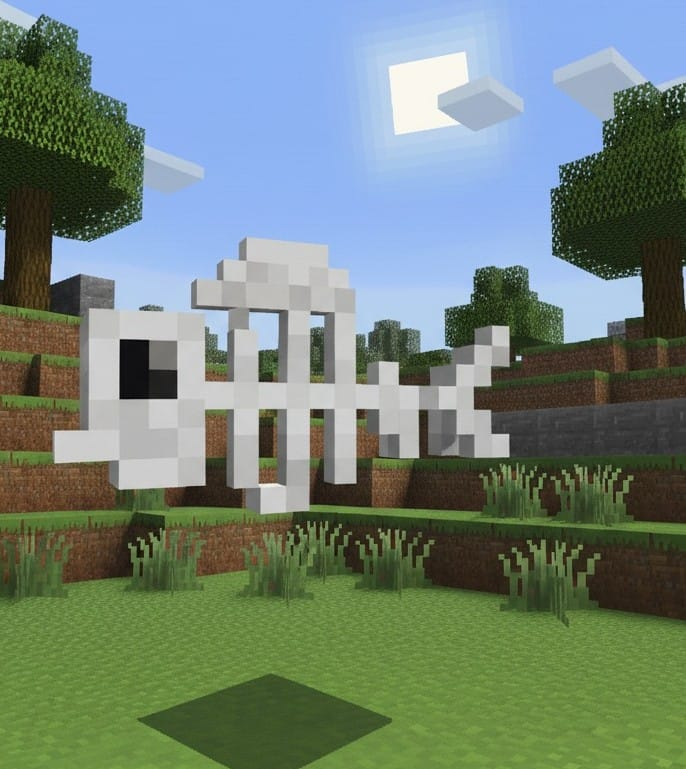
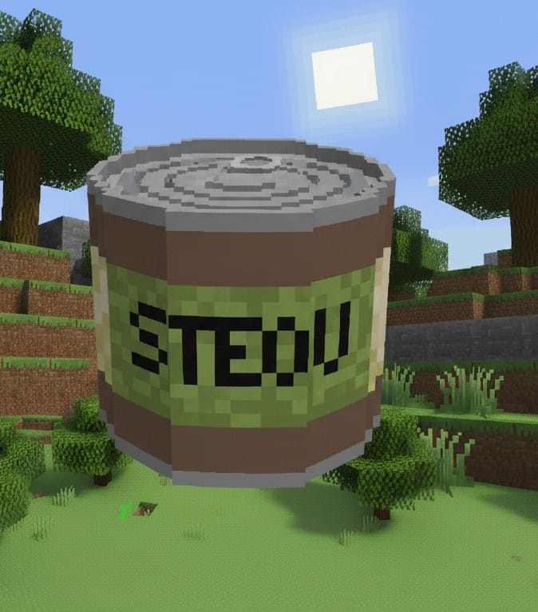
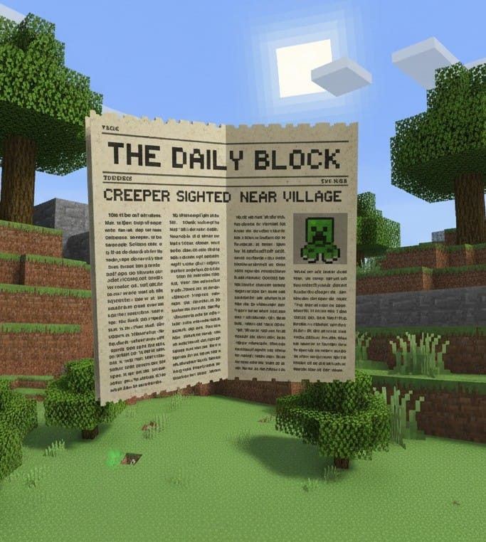
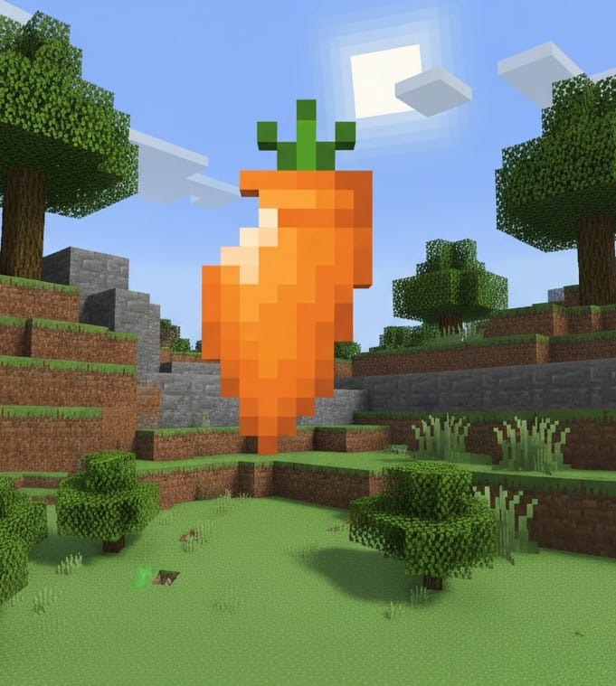
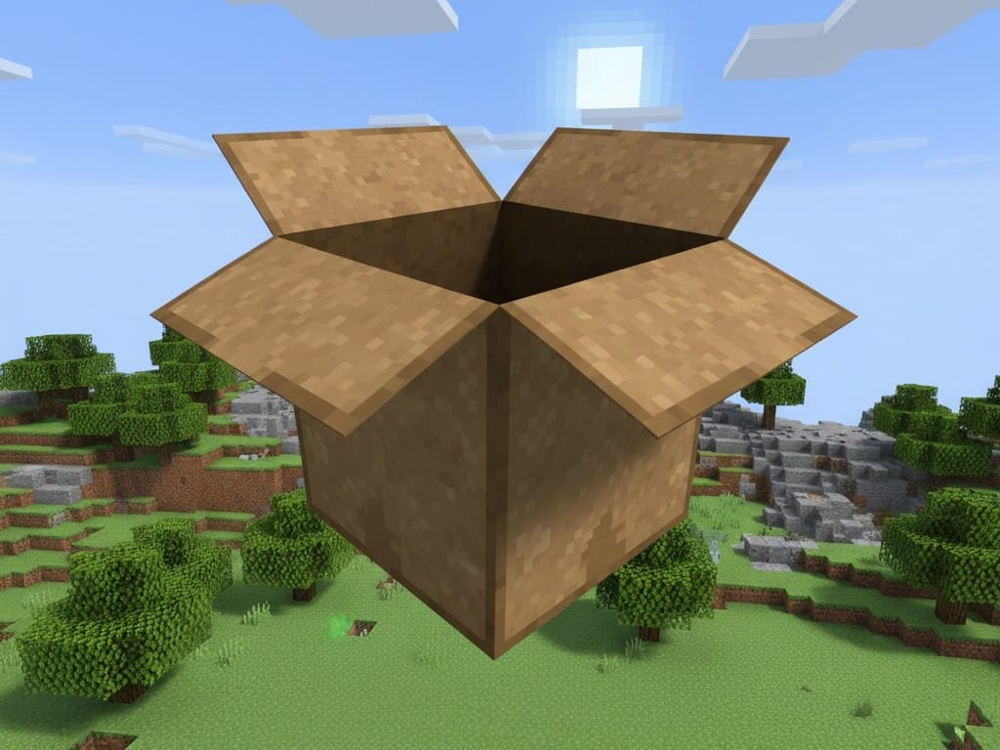
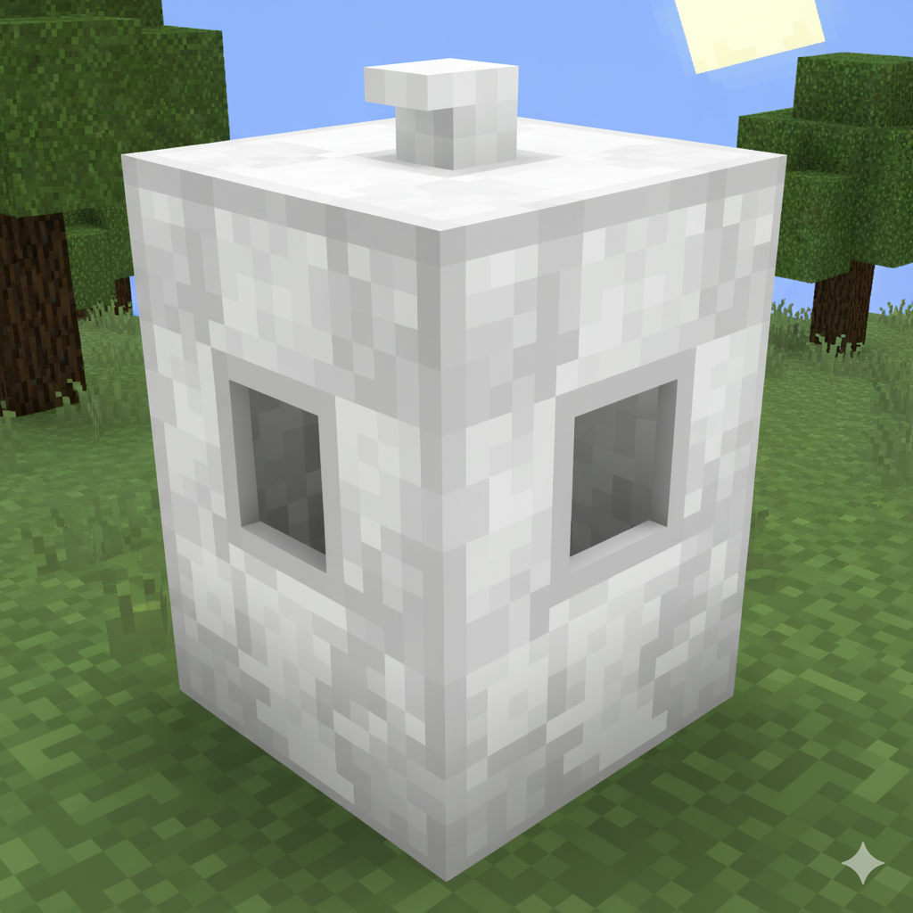
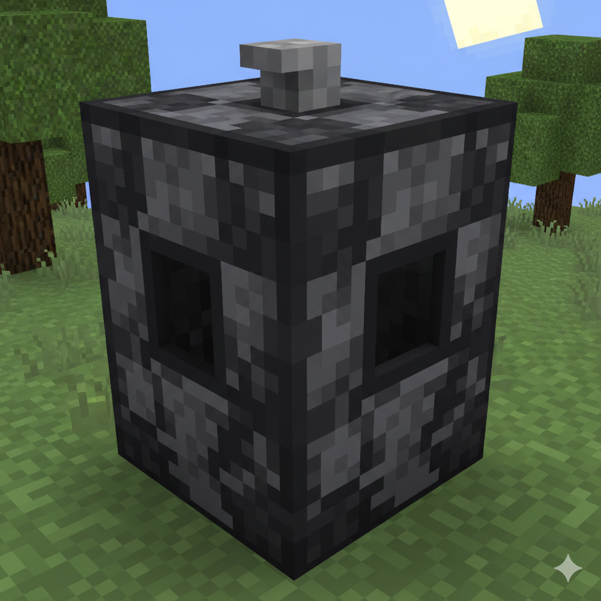

🎮 ¡Pon en práctica lo que aprendiste!
Arrastra cada objeto al contenedor correcto y gana puntos 🌟









Orgánicos

Reciclables

No reciclables
Arrastra los objetos al basurero correcto 🧹
Puntaje: 0